1991 to the present
A timeline of visual change.
The date attached to each entry marks the beginning of its main popularity period. Many trends continue, overlap, or return much later.
1991
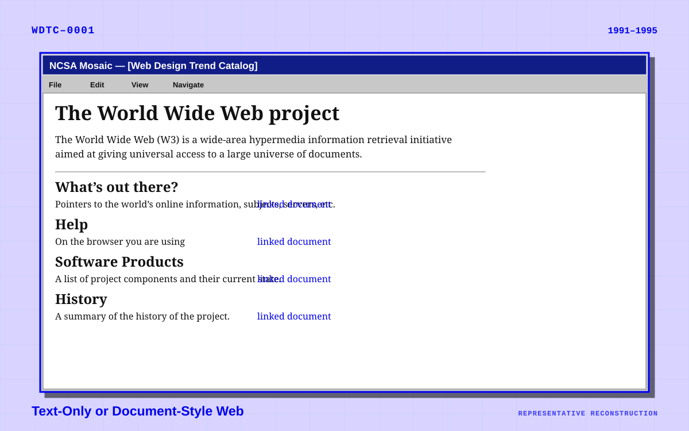
Text-Only or Document-Style Web
The earliest websites looked more like technical papers or directories than designed publications.
1991–1995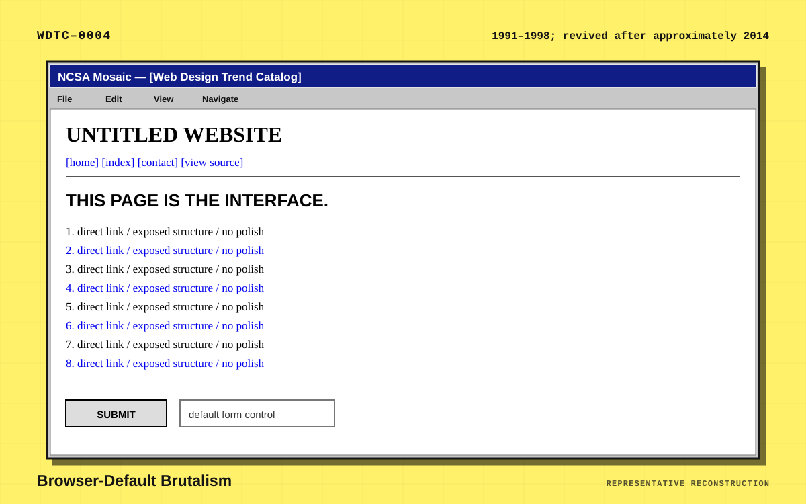
Browser-Default Brutalism
Some early sites were “brutalist” by necessity rather than conscious artistic intent. Later designers deliberately revived the look.
1991–1998; revived after approximately 20141994
1995

Cyber, Techno, and Y2K Futurism
Early commercial culture often represented the internet as a futuristic electronic frontier.
1995–2003; revived in the 2020s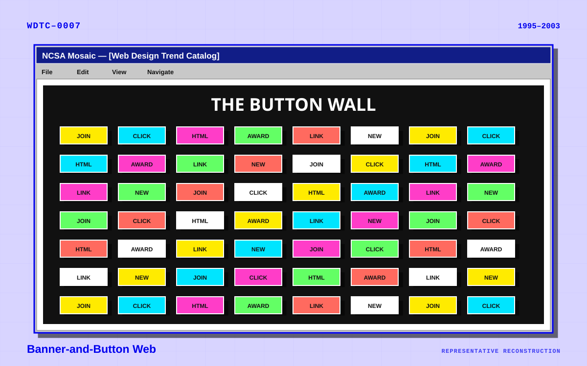
Banner-and-Button Web
Small graphic assets became a basic visual vocabulary of the early web.
1995–2003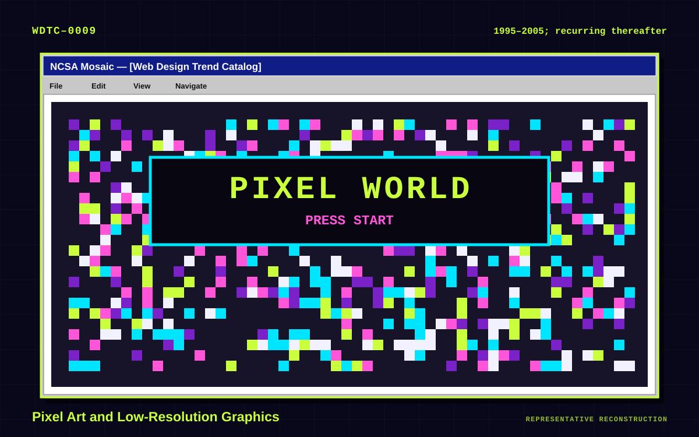
Pixel Art and Low-Resolution Graphics
Limited bandwidth, small screens, and early graphic formats encouraged compact bitmap artwork.
1995–2005; recurring thereafter1996
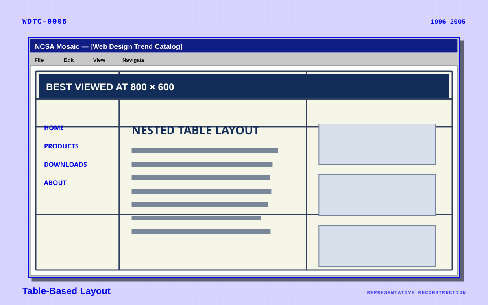
Table-Based Layout
Before CSS layout became reliable, designers used HTML tables—originally intended for data—to position page elements.
1996–2005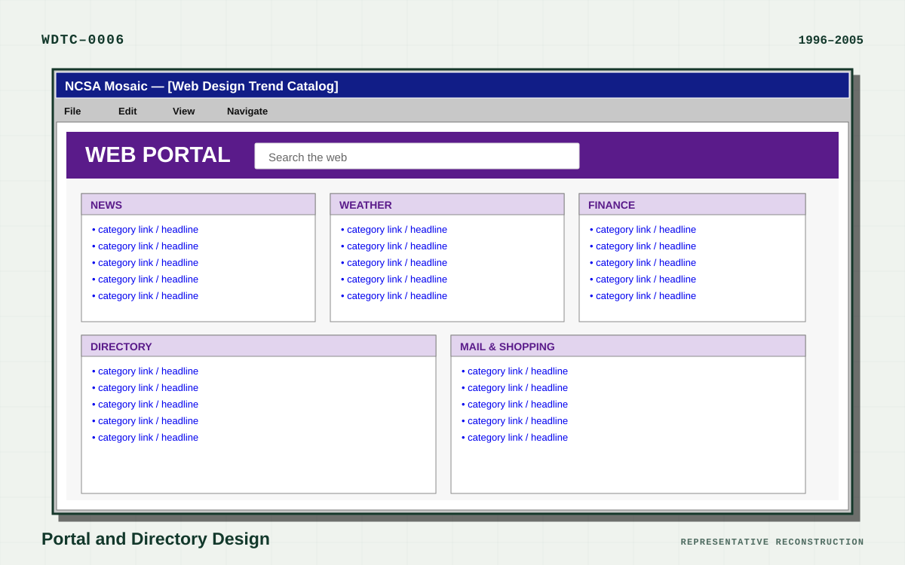
Portal and Directory Design
Major services sought to become the user’s starting point for the entire web.
1996–2005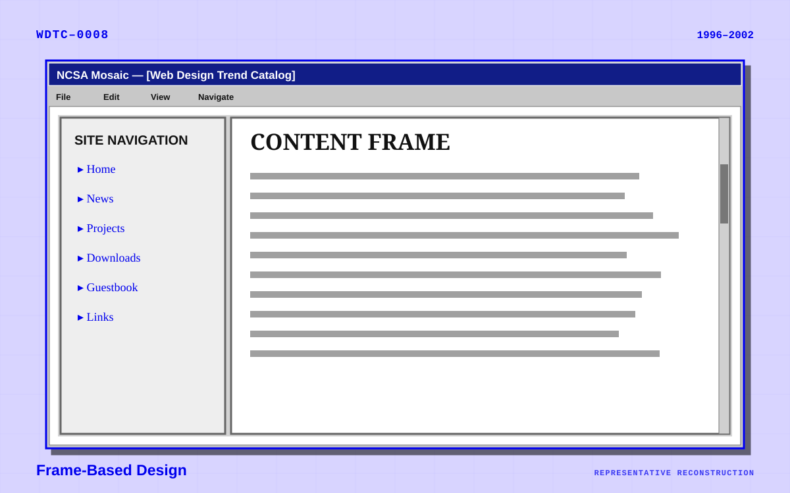
Frame-Based Design
HTML frames allowed multiple documents to appear in separate regions of one browser window.
1996–20021997
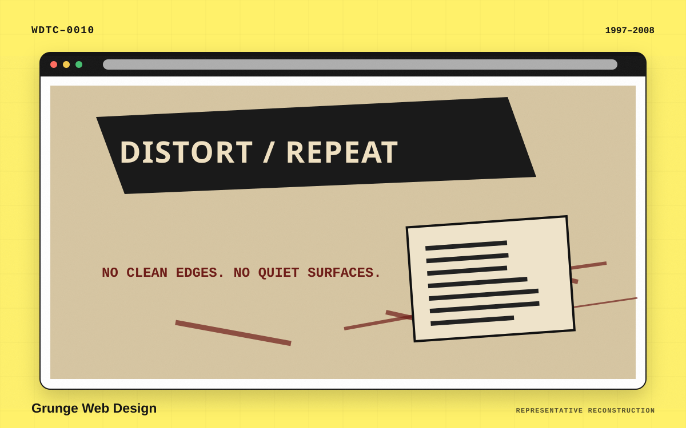
Grunge Web Design
Influenced by alternative music, skate culture, zines, and experimental print graphics, grunge rejected clean digital surfaces.
1997–2008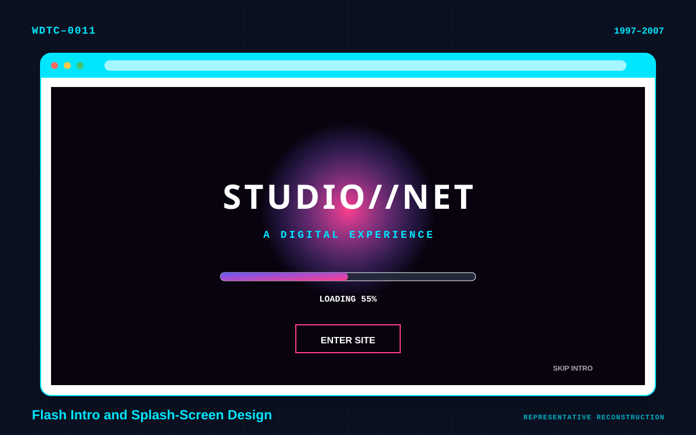
Flash Intro and Splash-Screen Design
Many websites opened with an animated presentation before allowing access to the main content.
1997–20071998
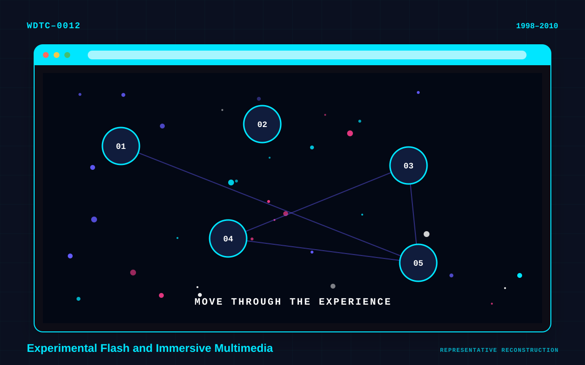
Experimental Flash and Immersive Multimedia
Flash became a platform for interfaces that behaved more like games, films, or interactive art installations.
1998–2010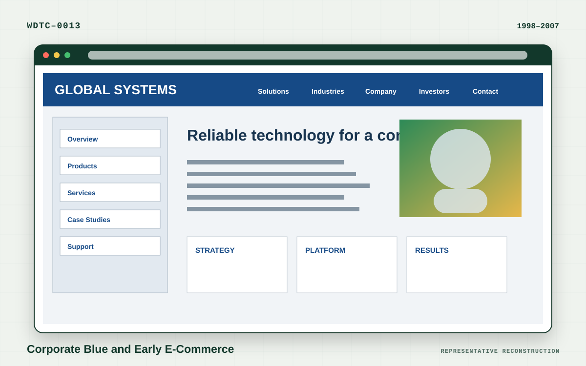
Corporate Blue and Early E-Commerce
Companies adopted a conservative visual language intended to signal reliability and technical competence.
1998–2007
Liquid or Fluid Layout
Fluid pages expanded and contracted with the browser window instead of remaining at a fixed width.
1998–20121999

2001

CSS and Web-Standards Minimalism
Designers began separating structure from presentation and replacing table-heavy markup with CSS.
2001–2008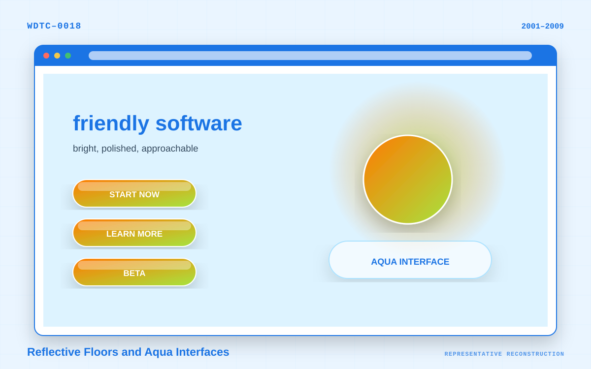
Reflective Floors and Aqua Interfaces
Influenced heavily by early-2000s operating-system interfaces, designers simulated polished glass and translucent plastic.
2001–20092004
2006
2007
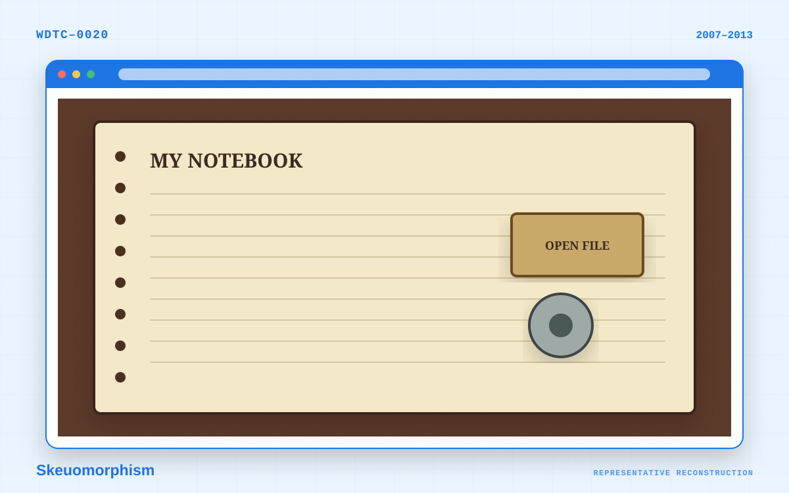
Skeuomorphism
Skeuomorphism makes digital objects resemble familiar physical materials or devices. It was intended to make unfamiliar interactions understandable through recognizable visual metaphors.
2007–2013
Magazine and Editorial Grid Design
Publishers borrowed heavily from print editorial design.
2007–present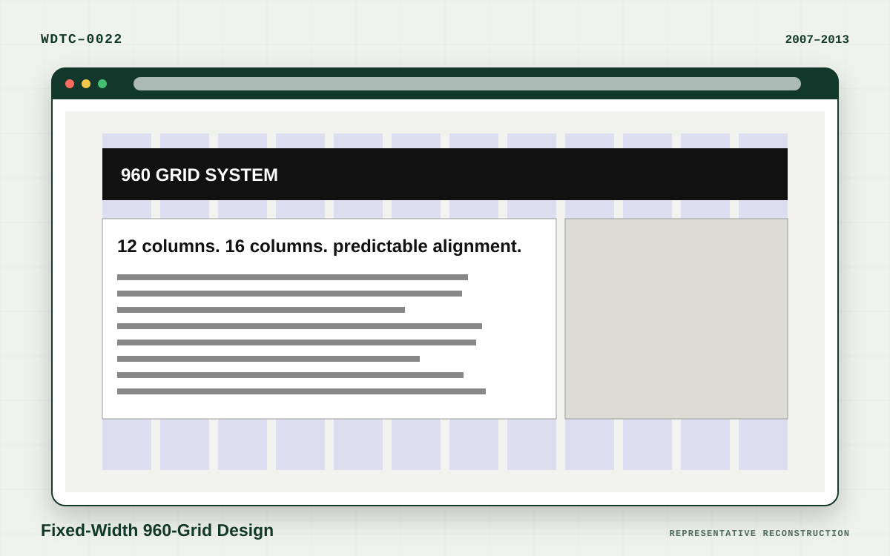
Fixed-Width 960-Grid Design
The 960-pixel-wide grid became a common framework for designing predictable desktop pages.
2007–20132008


2010

Responsive Web Design
Ethan Marcotte named and formalized responsive web design in 2010. Its foundational techniques were flexible grids, flexible images, and CSS media queries.
2010–present
Metro or Tile-Based Design
Associated with Microsoft’s interface systems, Metro emphasized typography, flat color, and rectangular modules.
2010–2015
Accessibility-Led and Inclusive Design
Accessibility is a practice rather than a decorative style, but it increasingly affects visible design conventions.
Increasingly prominent from the late 2010s onward2011

Mobile-First Design
Rather than shrinking a desktop design, mobile-first practice begins with the smallest useful interface and progressively adds complexity.
2011–present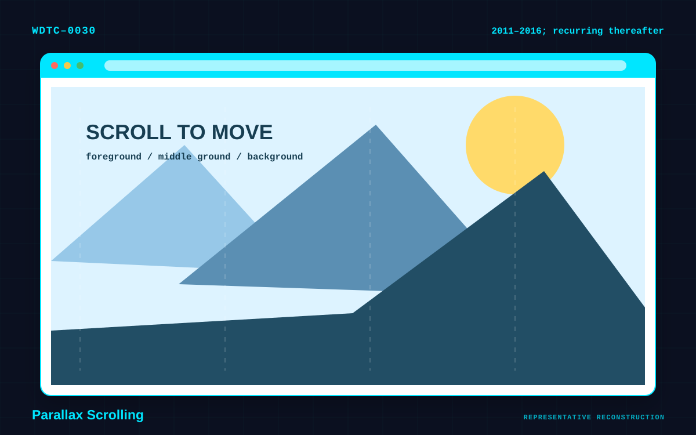
Parallax Scrolling
Parallax creates an illusion of depth by moving foreground and background layers at different speeds.
2011–2016; recurring thereafter
Full-Screen Photography
Faster connections and larger displays enabled imagery to dominate the opening viewport.
2011–present2012

Flat Design
Flat design removed much of skeuomorphism’s texture and simulated depth. It became broadly popular around 2012.
2012–2017; still highly influential
Card-Based Design
Cards package related information into reusable, rearrangeable units.
2012–present
Hamburger and Off-Canvas Navigation
Mobile constraints led designers to conceal navigation behind a compact icon.
2012–present
Scrollytelling
Scrollytelling reveals narrative content as the reader moves through a page.
2012–present2013

2014

2015

Flat 2.0 or Semi-Flat Design
Flat 2.0 retained flat design’s simplicity while reintroducing restrained depth to clarify interaction. Nielsen Norman Group describes it as a usability-oriented alternative to excessively flat interfaces.
2015–present
Geometric and Abstract Minimalism
Designers supplemented minimal layouts with simple abstract forms.
2015–present
Duotone and Color-Overlay Design
Photographs were recolored using two contrasting hues or covered by strong translucent color fields.
2015–2019; recurring thereafter
Split-Screen Layout
The viewport is divided into two contrasting but related regions.
2015–2020; still used selectively
Motion UI and Microinteractions
Small animations communicate system status, causality, and feedback.
2015–present2016

Gradient Revival
After flat design temporarily suppressed gradients, designers returned to them in a softer and more expressive form.
2016–present
Bold Typography and Type-First Design
Improved browser font support allowed typography to become a primary visual asset.
2016–present
Asymmetrical and Broken-Grid Design
This style deliberately violates conventional column alignment while maintaining an underlying compositional system.
2016–present
Illustrative SaaS Design
Technology companies increasingly used custom illustration to explain abstract services and make brands appear approachable.
2016–present
Design-System and Component-Driven Aesthetics
Reusable interface libraries have shaped not only implementation but visual style.
2016–present2017


2018

Dark-Mode Design
Dark interfaces moved from specialist applications into mainstream websites and operating systems.
2018–present
3D Web Design
Improved browser graphics enabled real-time three-dimensional scenes.
2018–present
Immersive Product Storytelling
High-end product pages increasingly behave like directed visual narratives.
2018–present
Maximalism
Maximalism emerged partly as a reaction to restrained, highly standardized minimalism.
2018–present
Retro Web and Webcore Revival
Designers intentionally recreate early-web imagery using modern technology.
2018–present
Minimal SaaS and Landing-Page Homogeneity
A standardized commercial language emerged through design systems, templates, and conversion optimization.
2018–present
Variable-Font and Experimental Typography
Modern font technology allows one font file to interpolate between weights, widths, slants, and other characteristics.
2018–present
Cursor-Driven Interaction
The pointer itself becomes part of the visual experience.
2018–present
No-Code and Template-Led Design
Visual site builders have democratized polished layouts and popularized repeatable patterns.
2018–present2019

Neumorphism
Neumorphism combines flat design with softly extruded controls that appear formed from the background itself. It is part of the broader progression from skeuomorphism to flat design and back toward subtle tactility.
2019–2021; still used selectively
Neo-Brutalism
Neo-brutalism combines raw, confrontational composition with bright contemporary branding.
2019–present